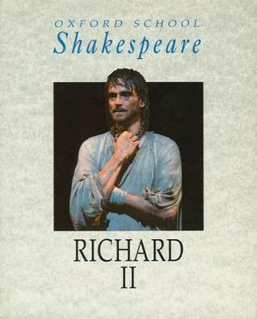
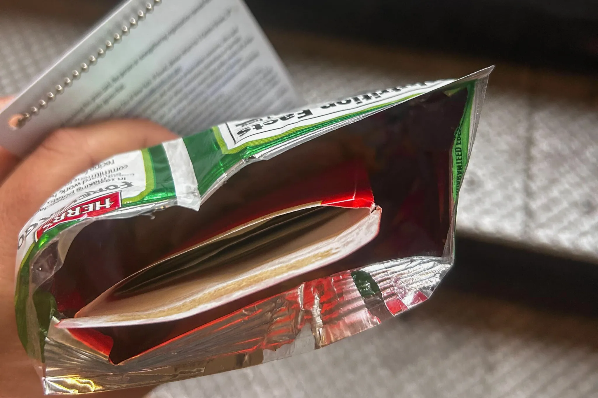
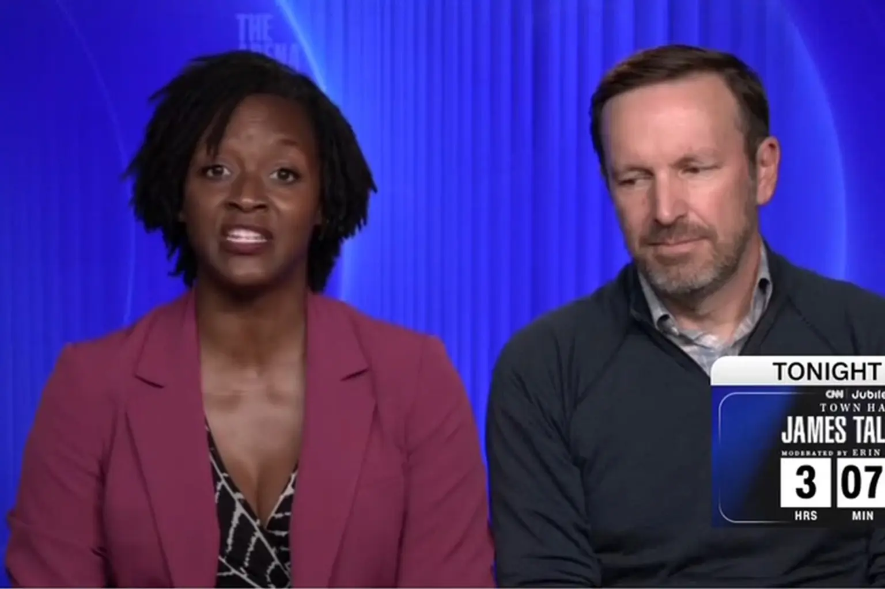

My Favorite Stories
Richard II

I'm a former actor, so I want to start with my favorite play. On it's surface it's about Richard, the King, who gives away his crown and kingdom to Bolingbroke, his cousin. Richard struggles with his identity throughout the play. "Alack the heavy day, I have worn so many winters out, and yet not know what name to call myself" GET ACT AND SC. As king, he's never had to think about who he is, because everyone has always told him who he was. Who are we all? It's a complicated question.
Cash and Chips

This was one of those stories that had my jaw on the floor. Funny enough Katie Hogan, the reporter this happened to, is a Craig Newmark alum! Winnie Greco, a former aide to the Adams administration, handed Hogan a wad of cash hidden inside a bag of potato chips. She denies it was a bribe, but instead, a cultural misunderstanding
This is Subjective, But We Found The Greatest One-Liner in Political History

On CNN next to Senator Phil Murphy, Democratic candidate Angie Nixon said people were lying about her wanting to abolish prisons. She then said “Why would I want to do that when I want her locked up and punished in jail for what she has done?” Nixon is refering to her opponent, Angie Moody, being prosecuted for Medicare Fraud.